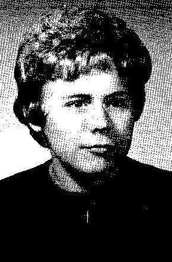
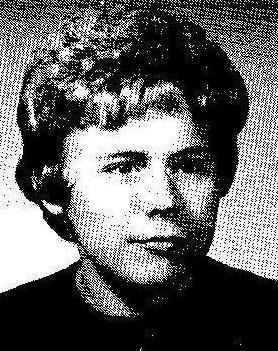

Liga Danenberg b. 1946
Peter's aunt.
Living. As for every living relative on this site, the birth date is given by year only, and no current address is shown.
Also recorded as Līga Šūbacha (Schubach); Liga Danenberg (married name Schubach).
Liga Danenberg was born in 1946 in Haunstetten DP camp, Augsburg, Bavaria, Germany3,4, the daughter of Arvīds Fricis Danenbergs and Elvīra Antonija Sirlaka4,19,20,21,22. She married Wolf Schubach between 1968 and 1969 in United States23. She arrived at Boston, Massachusetts, United States on 7 Jul 194914.
Family
- Parents
- Arvīds Fricis Danenbergs 1913–1996 and Elvīra Antonija Sirlaka 1912–2011 documented
- Husband
- Wolf Schubach 1944–2019 · married between 1968 and 1969 in United States23
Life events
| Event | Date | Place and details |
|---|---|---|
| Born | 1946 | Haunstetten DP camp, Augsburg, Bavaria, Germany3,4 |
| Arrived | 7 Jul 1949 | Boston, Massachusetts, United States14 |
| Lived | 13 Jul 1949 | Liberty Township, Mercer County, Ohio, United States5,6 |
| Lived | bet 1951 and 1965 | Tiffin, Ohio, United States7 |
| Married | bet 1968 and 1969 | with Wolf Schubach United States23 |
| Lived | bet 1969 and 2026 | Milwaukee, Milwaukee County, Wisconsin, United States8 |
| Education | Jun 1971 | Milwaukee, Milwaukee County, Wisconsin, United States Awarded Master of Arts degree by the School of Library and Information Science, University of Wisconsin–Milwaukee.9 |
| Work | 26 Aug 1971 | Milwaukee, Milwaukee County, Wisconsin, United States Weights and measures inspector for the Milwaukee Health Department Bureau of Consumer Protection and Environmental Health (working out of the Northwest Health Center, 7630 W. Mill Rd.) since early June 1971 — one of the first two women inspectors in the bureau's history; resided with her husband…10 |
| Work | bet 1976 and 2026 | Brookfield, Wisconsin, United States Co-founder, with her husband, of two Milwaukee-area companies: EXACTA Corporation (1976), an IT software-consulting firm, and Exacta Graphics, Inc. (1985), a commercial printer. Exacta Graphics still trades from 13050 West Custer Avenue, Butler, Wisconsin 53007 and still names them on its About…11 |
| Work | 26 Mar 1978 | Milwaukee, Milwaukee County, Wisconsin, United States Librarian in Milwaukee; appeared on Milwaukee Public Library's television program Critique (Channel 10) discussing books including Harrison Salisbury's 'Black Night, White Snow: Russia's Revolutions 1905–1917' (26 Mar 1978) and 'The Legacy of Mark Rothko' (25 Jun 1978).12 |
| Note | 15 Mar 2019 | Milwaukee, Milwaukee County, Wisconsin, United States Widowed 15 March 2019. There were no children of the marriage: the obituary lists no issue, and her mother Elvīra's 2011 obituary names only three grandchildren — Liga, Peter and Justin — the children of her brothers. The family's trust planning is consistent: she settled the Liga Schubach 2019…15 |
| Note | 2026 | Milwaukee, Milwaukee County, Wisconsin, United States A supporter of the Milwaukee Youth Symphony Orchestra, listed by name in the donor roll of both the Founders Concert (Senior Symphony, Sharon Lynne Wilson Center, Brookfield, 21 February 2026) and the Grand Finale (Bradley Symphony Center, 3 May 2026) programmes, at the Cantabile level,…16 |
| Work | Milwaukee, Milwaukee County, Wisconsin, United States City librarian in Milwaukee — "largely in Milwaukee, Wisconsin, where Liga served as a city librarian and Wolf as a computer programmer". No dates, no branch and no second source were found; the Milwaukee Public Library publishes no staff list far enough back. This is the only statement anywhere…13 | |
| Note | Milwaukee, Milwaukee County, Wisconsin, United States Religious and charitable life, from her husband's obituary and from the ministry's page about them both: the couple were "adamant supporters of their local church, Israel, ministries worldwide, and Devar Emet Messianic Jewish Outreach" (Skokie, Illinois), and of Set Free Correspondence Ministry of…17 | |
| Note | According to an online family tree18 |
Photographs


Records


Sources
- Pēc auto sadursmes miris agr. Arvīds Danenbergs, Laiks, Nr.26 (06.04.1996), p. 7.
meitas: Līga Šūbacha (Schubach) un Ilze Bērziņa
Translation: daughters: Līga Šūbacha (Schubach) and Ilze Bērziņa
Married name Schubach (Latvianised Šūbacha); spoke at her father's memorial service.
- MyHeritage family tree 'Dzimta' of Peter's third cousin (his family site), member GEDCOM export of 26 Oct 2026, I500157 (person-6500157), GEDCOM lines 10011–10040.
NAME Liga /Danenberg/ · _MARNM Schubach
- Standesamt Augsburg, Form 6, list of births of Latvians, 18 June 1947, DE ITS 2.1.1.3 BY 011 6 LET ZM, DocID 85921424.
25. Danenbergs | Liga | [date] Augsburg | w | Arvids D. | Lettl. | Elvira, geb. Sirlaks | Lettl. | Haunstetten, Lkr. Augsbg. / 26. " | Kalvis | … | m
LIVING. Twins. Parents: Arvids D. and Elvira, née Sirlaks. Two birth certificates per child were enclosed with the list.
- Declaration of Intention No. 134, Arvids Danenbergs, Mercer County Common Pleas, Celina, Ohio, 14 Aug 1950.
Kalvis Danenbergs--M--1946-Augsburg, Germany--Rockford, Ohio / Liga Danenbergs-F--1946-Augsburg, Germany--Rockford, Ohio
From both parents' declarations. The 1950 census has 'Kalvis V'.
- Eight Latvian DP's Will Make Homes In Mercer Co., The Journal-Gazette (Fort Wayne, Indiana), 14 July 1949, p. 13.
The family of six includes Arvids Danenbergs. 36. his wife. Elvira. 37, their three children. Peter. 6, a set of twins. Liga and Kalvis. 2>2, and Mrs Dancnherg’s mother. Mrs. Emma Sirlaks
Translation: The family of six includes Arvids Danenbergs, 36, his wife, Elvira, 37, their three children, Peter, 6, a set of twins, Liga and Kalvis, 2 1/2, and Mrs. Danenbergs's mother, Mrs. Emma Sirlaks.
Residing at age 2 1/2 with parents Arvids and Elvira Danenbergs, brother Peter (6), twin brother Kalvis (2 1/2), and maternal grandmother Emma Sirlaks at the tenant house on the D. R. Smalley farm in Liberty Township, Mercer County, Ohio.
- Household of Arwids F Danenbergs, Liberty Township, Mercer, Ohio.
Liga Danenbergs: Race = White; Residence 1949 @ germany; Census 10 April 1950 @ Liberty Township, Mercer, Ohio, United States; Birth 1947 @ Germany; RelationshipToHead=Daughter; Age=3
After landing in Boston on 7 July 1949, she lived with her family on the farm of sponsor Robert M. Hawk in Liberty Township, Mercer County, Ohio (Rockford mailing address), enumerated as 'Liga Danenbergs' (age 3) in the 10 April 1950 US Census.
- Tiffin, Seneca County, Ohio residence of the Danenberg family (1951–1960).
1953 Danenbergs Elvira Mrs pharm Mercy Hosp h23 Apple / 1956 Danenbergs Elvira (Arvids) pharmacist Mercy Hosp r RD 2 / 1958 Danenbergs Elvira Mrs pharm Mercy Hosp r RD 2 / 1959 Danenbergs Elvira Mrs pharm Mercy Hosp r RD 2 … Top Row: Connie Schultz, Paul Porter, Liga Dan-enbergs, Bobbie Brendle, Georgianne Wertz, Bobby Kline, Jim Omlor.
Moved with her family after about a year on the Hawk farm to Tiffin, Seneca County, Ohio (where her parents are recorded at [address omitted] in 1953 and on their [address omitted] Tiffin farm in 1956–1959 R. L. Polk city directories), attending third grade at Hopewell-Loudon School in nearby Bascom in 1955–1956.
- Assessment record, taxkey 1160199000, [address omitted].
1160199000 | [address omitted] | THE LIGA SCHUBACH 2019 REVOCABLE TRUST DATED FEBRUARY 8, 2019 | 1964 | Ranch | $410,700 | 3 | 2.5 | 12,000 | 2,066 | 1 Residential | 7/12/2019 | $203,400
She has lived in Milwaukee, Wisconsin since shortly after her marriage — "Wolf and Liga moved to Milwaukee, Wisconsin", "50 years of life together, largely in Milwaukee". Her present house is [address omitted], Milwaukee, a 1964 ranch of 2,066 sq ft on a 12,000 sq ft lot, 3 bedrooms and 2½ bathrooms, assessed by the City of Milwaukee at $410,700; the recorded sale is 12 July 2019 for $203,400 (a transfer into the trust, five months after her husband's death, not an arm's-length sale). The registered owner is "THE LIGA SCHUBACH 2019 REVOCABLE TRUST DATED FEBRUARY 8, 2019" — a trust she settled on 8 February 2019, five weeks before Wolf died.
- UWM Commencement List (School of Library and Information Science), The Milwaukee Journal (Milwaukee, Wisconsin), 3 June 1971, p. 79.
SCHOOL OF LIBRARY AND INFORMATION SCIENCE Master of Arts Sister Arm EsCbweiler, Brian J. Gerl, Nancy C. Mayer, a DNA match, Liga D. Schubach and Karen J. Sturm, all of Milwaukee;
Translation: SCHOOL OF LIBRARY AND INFORMATION SCIENCE Master of Arts: Sister Ann Eschweiler, Brian J. Gerl, Nancy C. Mayer, a DNA match, Liga D. Schubach and Karen J. Sturm, all of Milwaukee;
Awarded Master of Arts degree by the School of Library and Information Science, University of Wisconsin–Milwaukee.
- 'Blows Their Minds', The Milwaukee Journal (Milwaukee, Wisconsin), 26 August 1971, p. 35.
Liga Schubach, also 24, has been working in weights and measures inspection since early June. She has a master's degree in library science ... from UWM rt but T couldn't find a job in my field. My husband once worked for the health department in Philadelphia and suggested I apply here. I'm happy to have a job —- so many people are unemployed." Mrs. Schubach and her husband Wolfhart live at [address omitted]
Translation: Liga Schubach, also 24, has been working in weights and measures inspection since early June. She has a master's degree in library science from UWM, 'but I couldn't find a job in my field. My husband once worked for the health department in Philadelphia and suggested I apply here. I'm happy to have a job — so many people are unemployed.' Mrs. Schubach and her husband Wolfhart live at [address omitted]
Weights and measures inspector for the Milwaukee Health Department Bureau of Consumer Protection and Environmental Health (working out of the Northwest Health Center, 7630 W. Mill Rd.) since early June 1971 — one of the first two women inspectors in the bureau's history; resided with her husband Wolfhart Schubach at [address omitted], Milwaukee; noted that her husband once worked for the health department in Philadelphia.
- Welcome! : About Us : Exacta Graphics, Inc..
Since Wolf and Liga started EGI in 1985, we have focused on fostering a work environment that meets our customers' needs with excellence … Founders Wolf & Liga Schubach … 13050 West Custer Avenue, Butler, WI 53007
Co-founder, with her husband, of two Milwaukee-area companies: EXACTA Corporation (1976), an IT software-consulting firm, and Exacta Graphics, Inc. (1985), a commercial printer. Exacta Graphics still trades from 13050 West Custer Avenue, Butler, Wisconsin 53007 and still names them on its About page: "Since Wolf and Liga started EGI in 1985… Founders Wolf & Liga Schubach". EXACTA Corporation was based in Brookfield, Wisconsin, with a Madison branch; a 2012 Wisconsin high-tech directory entry gives "Parent Company: EXACTA Corporation. Parent Location: Brookfield, WI… Year Established: 1976. Employees: 115" (search snippet only — the page behind it would not download, so that head-count is a lead, not a fact).
- Television Listings (Critique, Channel 10), The Milwaukee Journal (Milwaukee, Wisconsin), 26 March 1978, p. 192.
6:30—Critique — Harrison Salisbury discusses his latest book. “Black Night. White Snow: Russia’s Revolutions 1905-1917” with librarian Liga Schubach 10
Translation: 6:30—Critique — Harrison Salisbury discusses his latest book, 'Black Night, White Snow: Russia's Revolutions 1905-1917' with librarian Liga Schubach 10
Librarian in Milwaukee; appeared on Milwaukee Public Library's television program Critique (Channel 10) discussing books including Harrison Salisbury's 'Black Night, White Snow: Russia's Revolutions 1905–1917' (26 Mar 1978) and 'The Legacy of Mark Rothko' (25 Jun 1978).
- About the Schubachs.
Wolf and Liga Schubach shared 50 years of life together, largely in Milwaukee, Wisconsin, where Liga served as a city librarian and Wolf as a computer programmer.
City librarian in Milwaukee — "largely in Milwaukee, Wisconsin, where Liga served as a city librarian and Wolf as a computer programmer". No dates, no branch and no second source were found; the Milwaukee Public Library publishes no staff list far enough back. This is the only statement anywhere of her own profession and it is worth confirming with her.
- Manifest of In-bound Passengers (Aliens), No. 27, USAT General Blatchford, Bremerhaven 28 June 1949 → Boston 7 July 1949, NAID 76075234, image 80 of 651, object 76075314, file 41253_B124264-01101.jpg, lines 4–8.
DANENBERGS Arvids Rockford, Ohio 36 Ma Md I-849016 Latvian … ADMITTED JUL 7 1949 BOSTON, MASS.
LIVING. Manifest 27, lines 7 (Kalvis, I-849019) and 8 (Līga, I-849020); age 2; IRO roll nos. 611–612, country of birth Germany.
- Wolfhart K. "Wolf" Schubach obituary (1944–2019).
He is survived by his sister Gisela DeDomenico and her son, Adrian (Jennifer), as well as his uncle Adolf Blum, cousins, Achim (Marita) Schubach, Peter (Zita) Blum, Klaus Schubach, Brigitte Schubach, and other relatives in America and Germany.
Widowed 15 March 2019. There were no children of the marriage: the obituary lists no issue, and her mother Elvīra's 2011 obituary names only three grandchildren — Liga, Peter and Justin — the children of her brothers. The family's trust planning is consistent: she settled the Liga Schubach 2019 Revocable Trust on 8 February 2019, five weeks before Wolf died.
- Milwaukee Youth Symphony Orchestra — FOUNDERS CONCERT.
Cantabile ($1,000 - $2,499) … Steve Russ · William Scanlon · Liga Schubach · Carter & Pamela Simmons
A supporter of the Milwaukee Youth Symphony Orchestra, listed by name in the donor roll of both the Founders Concert (Senior Symphony, Sharon Lynne Wilson Center, Brookfield, 21 February 2026) and the Grand Finale (Bradley Symphony Center, 3 May 2026) programmes, at the Cantabile level, $1,000–$2,499.
- About the Schubachs.
The couple were adamant supporters of their local church, Israel, ministries worldwide, and Devar Emet Messianic Jewish Outreach.
Religious and charitable life, from her husband's obituary and from the ministry's page about them both: the couple were "adamant supporters of their local church, Israel, ministries worldwide, and Devar Emet Messianic Jewish Outreach" (Skokie, Illinois), and of Set Free Correspondence Ministry of Wisconsin. Their church fellowship was among evangelical Christians "especially those simply known as the brethren or Plymouth Brethren". She travelled with Wolf on "many visits to the Holy Land". On his death the family asked for gifts to the Wisconsin Humane Society, those ministries, Aurora Zilber Family Hospice in Wauwatosa, and John Carroll or Hebrew Universities. Wolf's library of Hebrew and biblical scholarship went to Devar Emet, which keeps a page about the two of them.
- MyHeritage family tree 'Dzimta' of Peter's third cousin (his family site), member GEDCOM export of 26 Oct 2026, I500157 (person-6500157), GEDCOM lines 10011–10040.
RESI
- Peter's tree, danenberg.sql, 2007–2015, parentages 42.
- AEF DP Registration Record, Danenbergs Liga, 27 Nov 1946, DE ITS 3.1.1.1, folder DP0730, DocID 66841190.
(2) Family Name: DANENBERGS, | Other Given Names: LIGA | (6) Birthdate: 1946 | Birthplace: Augsburg Germany | (10) Full Name of Father: Arvids Danenbergs | (11) Full Maiden Name of Mother: Elvira Sirlaks | (20) Signature of Registrant: A. Danenbergs | Date: 27.11.46. | (24) REMARKS: 1. Father: Arvids Danenbergs G-02081303. 2. Mother: Elvira " G-02081302 3. Brother: Kalvis 4. " : Peter " G-01950275. 5. Gr.-mother: Emma Sirlaks G-02673064
father: Arvīds Fricis Danenbergs; mother: Elvīra Antonija Sirlaka
- Standesamt Augsburg, Form 6, list of births of Latvians, 18 June 1947, DE ITS 2.1.1.3 BY 011 6 LET ZM, DocID 85921424.
25. Danenbergs | Liga | 1946 Augsburg | w | Arvids D. | Lettl. | Elvira, geb. Sirlaks | Lettl. | Haunstetten, Lkr. Augsbg. / 26. " | Kalvis | 1946 Augsbg. | m | " | " | " " | " | " "
father: Arvīds Fricis Danenbergs; mother: Elvīra Antonija Sirlaka
- Household of Arwids F Danenbergs, Liberty Township, Mercer, Ohio.
136 No No Danenbergs, Arwids F Head W M 37 Mar Latvia … Elvira A Wife W F 38 Mar Latvia … Peter V Son W M 7 Nev Latvia … Liga Daughter W F 3 Nev Germany
father: Arvīds Fricis Danenbergs; mother: Elvīra Antonija Sirlaka
- Wolfhart K. "Wolf" Schubach obituary (1944–2019).
A devoted husband to his wife of 50 years, Liga (nee Danenbergs) … After marrying, Wolf and Liga moved to Milwaukee, Wisconsin
Married Wolfhart K. "Wolf" Schubach. His obituary of March 2019 calls him "A devoted husband to his wife of 50 years, Liga (nee Danenbergs)", which puts the wedding in 1968 or 1969; the Messianic ministry they supported says the same ("Wolf and Liga Schubach shared 50 years of life together"). The place is not stated. Both were then in north-east Ohio — he in Beachwood, near Cleveland, having graduated from John Carroll University; her family had come to Ohio in 1949 and her brother took his B.S. at Case in Cleveland in 1964 — so an Ohio wedding is the likely guess but is NOT established. The couple moved to Milwaukee after marrying.